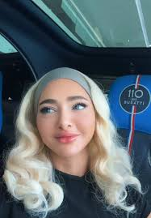
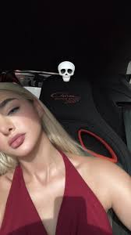
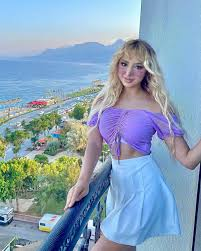
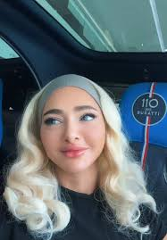
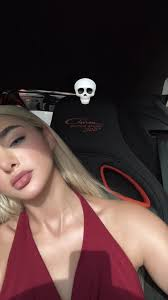
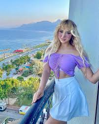

Malak Oueslati est une personnalité tunisienne connue sur Instagram. Elle a étudié et obtenu son diplôme, mais elle a choisi de se concentrer sur son travail en tant qu’influenceuse, proposant des publications variées sur la beauté, des projets artistiques, la promotion et la publicité de produits, et offrant parfois à ses abonnés des cadeaux de valeur tels que des iPhone ou des produits cosmétiques. Elle s’est également fait connaître grâce à ses apparitions dans certaines séries télévisées, comme Dunia Okhra (Une autre vie), où elle a incarné le rôle de Syrine. Grâce à son contenu original et à sa personnalité dynamique, elle compte des millions d’abonnés sur les réseaux sociaux, ce qui fait d’elle l’une des figures numériques les plus en vue en Tunisie.
 




